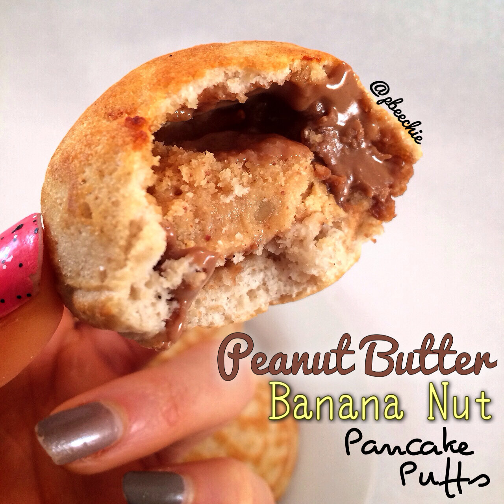

Peanut Butter Banana Nut Pancake Puffs
Putting my ebelskiver pan to use with more pancake puffs. I love these since you could pretty much stuff em with whatevvaaaa. Of course the best things to use are peanut butter. Or quest bars. Or both; so today I made peanut butter banana nut pancake puffs for breakfast. The best of both worldsss. I can't say that phrase seriously without thinking of the Hannah Montana song, just me? I am ashamed.

Peanut Butter Banana Nut Pancake PuffsMakes: 7- 1/3 cup raw old fashioned oats
- 1/2 scoop peanut butter marshmallow whey protein (by cellucor)
- 1 TBSP coconut flour
- 2 TBSP unsweetened almond milk
- 2 egg whites
- 1/4 tsp almond extract
- 1/2 tsp baking powder
- 1 stevia packet
- 1 banana nut muffin quest bar
- 2 TBSP+ 1 tsp coco bananas peanut butter (PB Crave brand)
Grind your oats into a flour. Then add the remaining ingredients except for the quest bar and peanut butter. Blend again. This is your batter. Then cut 1 banana nut muffin quest bar into 8 pieces. Except you only need 7 so just eat the extra piece as an appetizer ;). Begin to heat an ebelskiver pan with a medium heat. If you don't have one, you can make these like pancakes. Spray the heated ebelskiver pan with a nonstick spray, fill 1/2 way with the pancake batter, place a quest bar piece inside. Add a smidge of a nut butter; I used 1 tsp of coco bananas PB Crave in each. Then cover it all with more pancake batter. Repeat for all 7 positions on the pan. Once the bottoms are lightly brown, flip the pancake puff to cook the other side. Once lightly browned on the second side, remove!
Nutritional information for 1 pancake puff including 1 tsp of pb: 85 calories; 4 g fat, 8 g carbs (3 g fiber), and 7 g protein. Without the pb: 55 calories; 1 g fat, 7 g carbs (3 g fiber), and 6 g protein.